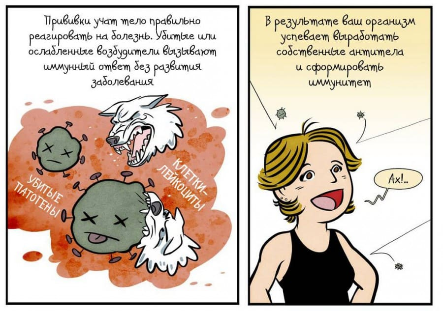
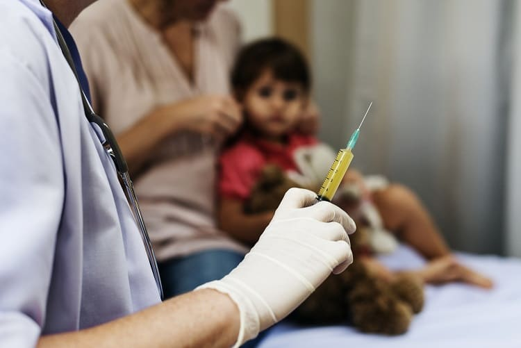

Несколько лет назад у меня была очень запоминающаяся встреча. Я сидел в кабинете на приеме, и ко мне обратилась семья: бабушка (лет 55, властная, крупная и хамоватая), мама (лет 23, хрупкая, робкая и несамостоятельная) и ребенок, лет четырех, худощавый и робкий, как мать
Говорила со мной бабушка, а мама и ребенок все время сидели молча, было очевидно, что бабушка тут хозяин. Суть ее просьбы (скорее, даже приказа) была проста, как огурец: мы не хотим делать прививки, у ребенка их нет ни одной и не будет; напишите нашему внуку/сыну липовый прививочный сертификат, будто все вакцины у него введены, чтобы у нас не было проблем с детским садом и прочими структурами.
Я, разумеется, отказал. Она намекнула, что заплатит, и чтоб я тут не строил из себя идейного (в этом месте мои постоянные пациенты должны оценить комичность ситуа ции). Я отрезал, что профессиональная репутация стоит намного дороже денег, и на этом бы нам следовало расстаться с нелестным мнением друг о друге, но женщина почему-то решила остаться и проверить меня на прочность. Видимо, ее ввел в заблуждение мой юный возраст: я и сейчас не очень-то похож на серьезного врача, а шесть лет назад и вовсе был сопляком.
Бабушка перешла в активное наступление. Она начала сыпать случаями в духе «после прививок все становятся инвалидами», я остановил ее и попросил выбрать самый вопиющий случай инвалидизации от прививок среди лично ей известных. Разумеется, это оказался детский церебральный паралич, который развился после, но не из-за прививок, и ее атака рассыпалась.
Рассердившись и теряя терпение оттого, что не удалось заткнуть такого слюнтяя первым же ударом, женщина начала длинную пулеметную очередь из заезженных до дыр антипрививочных мифов про то, что вакцина от кори вызывает аутизм, что в вакцинах содержатся страшно токсичные мертиоляты-алюминии, которые отравляют / снижают интеллект / приводят к бесплодию / убивают естественный иммунитет и т. д. – нужное подчеркнуть. Я парировал, что автор мифа об аутизме давно уличен в подлоге и с позором изгнан из медицины, что ртутных солей в морской рыбе содержится на порядок больше, чем в вакцинах, что вред от гидроксида алюминия, который добавляют в некоторые вакцины, – безграмотная выдумка, что паранойя про злых масонов, отравляющих вакцинами яичники непорочных славянских девочек, даже всерьез обсуждаться не должна, и т. д., и т. д.
Она не унималась и горячилась все сильнее. Стала давить на то, что мы, врачи, все сплошь продажные твари и получаем огромные откаты от фондов Рокфеллера и Сороса за то, что своими руками вводим яды под видом вакцин детям. Я иронично соглашался, что именно на эти откаты я купил себе велосипед, который пристегнут на улице, под окном моего кабинета, и на котором я езжу на работу уже который год (я до сих пор на нем езжу, кстати, – Сорос не балует). Стала нажимать на то, что производство вакцин – космически выгодный бизнес, и за такие деньги можно купить ученых и получить какие угодно исследования. Я отвечал, что те же самые фармкомпании заработают гораздо больше, проще и без всякого риска на производстве детских реанимационных аппаратов для лечения последствий управляемых инфекций.
Пошли в ход стандартные наезды: «Кто даст мне гарантию, что у ребенка не будет осложнений от прививки»… Я отвечал: «А кто даст гарантию, что вы не попадете с ребенком в ДТП в автомобиле? Так как же вы смеете сажать в него ребенка?» И это при том, что статистически осложнения от прививок случаются на несколько порядков реже, чем ДТП с участием детей.
Время шло, полчаса времени, отведенные в клинике на прием одного пациента, подходили к концу, найти аргумент, с которым я не был знаком и который не мог бы аргументированно парировать, открывая при ней исследования, статистические данные или разоблачительные статьи ученых, женщине так и не удавалось. Она сыпала одним аргументом за другим, иногда я не успевал закончить ответ на предыдущий выпад, как начинался новый. В ход уже пошли совсем никчемные карты типа «в вакцинах используется человеческий абортивный материал», «устранение былых эпидемий и двукратное увеличение продолжительности жизни человека было достигнуто исключительно благодаря улучшению общей гигиены» и т. д. Не убедившись в моей принадлежности к православному христианству, женщина наехала на меня за самонадеянное и богохульное вмешательство в Промысел Божий, который не допустит страдания ребенка и без этих ваших вакцин, на что получила ответ о наличии официальной позиции Русской православной церкви, запрещающей антипрививочную пропаганду в храмах и приходах, и наличии ряда очень достойных публикаций православных врачей, поддерживающих вакцинацию.
Мне казалось, она начинает выдыхаться (я и сам был истощен этой агрессивной перепалкой до дрожи в руках), но я не был в этом уверен, пока наконец не произошла кульминация: ее дочь (мама ребенка) осторожно произнесла что-то вроде: «Так может хотя бы в некоторых прививках есть толк?» Последовала напряженная пауза, во время которой воздух в кабинете можно было резать ножом, после чего моя оппонентка вскочила на ноги, повернулась к своей невестке и властно, с раздражением крикнула на нее: «Так, ну-ка вышла отсюда вон! А то тебе тут мозги-то сейчас промоют!»
«Что?! – вскочил и я. – Все это время вы и не думали вести диалог, не планировали взвешивать аргументы противной стороны? Вы даже на секунду не допускали, что можете ошибаться, а просто упражнялись в риторике? Тогда нам больше не о чем с вами говорить, до свидания». И она ушла, вытолкав перед собой невестку и внука и громко чертыхаясь.
В коридоре, куда я вышел через три минуты, чтобы немного походить и перевести дух после эмоционального напряжения, я неожиданно встретил маму с ребенком одних: бабушка ушла вперед, а ребенок застрял около аквариума. Она смотрела на меня виноватыми глазами, извинилась за «сцену, которую устроила бабушка». Я сказал ей, чтобы она думала своей головой, чтобы читала не только антипрививочную литературу, чтобы постаралась быть объективной и почитала, например, раздел «Вакцинопрофилактика» на Русском медицинском сервере, где разобраны все большие и малые антипрививочные мифы так подробно и аргументированно, как это только возможно. Она мне ответила, что очень зависит от нее финансово, живет на ее территории и совсем не может ей сказать ни слова поперек; возможно, позже, когда они с мужем встанут на ноги и съедут от нее, она и сможет что-то изменить, но пока они живут с бабушкой и ничего поделать не могут.
ПОЧЕМУ ТАК ПРОИСХОДИТ
Разумеется, и до и после той встречи у меня был опыт общения с антипрививочниками. Были и жаркие споры, и спокойное взаимоуважительное общение. Но образ этих троих до сих пор стоит в моей голове как некий прототип всех вообще антипрививочников. Наверное, я примитивизирую, но я до сих пор делю антипрививочников на две большие группы:
1) на лидеров-фанатиков (как эта женщина), перечитавших Котока и Червонской и получающих некое извращенное удовольствие от того, что они «не такие, как все», от своей диверсионной деятельности; они любят упоенно спорить со сторонниками вакцинации, они сводят на эту тему любой разговор и самоутверждаются за счет поливания грязью врачей; они не гнушаются даже низкими и нечестными аргументами, запугиванием, подавлением; они упиваются своей позицией мессии, спасающего мир от вселенского заговора продажных ученых и тупых врачей.
2) и на мало думающих – ведомых (как эта молодая мать), которые не очень-то и вникали во все это и даже иногда сочувствуют вакцинации, но:
вариант (а): попали в окружение, в котором масса антипрививочников, и не следовать общему потоку – трудно;
вариант (6): начитались статей и книг об огромном вреде вакцинации и испугались, а человека, с которым можно было бы обсудить все эти страхи, не нашли;
вариант (в), самый честный и сложный: имеют собственного ребенка-инвалида (вне зависимости от того, считают ли они инвалидность следствием вакцинации или нет) и потому заранее боятся любых вмешательств со стороны врачей, особенно профилактических.
Предвидя «наезды» на меня за мою необъективность и однобокость, скажу, что я 2–3 года (последние курсы обучения в медицинской академии) сам был антипрививочником, сам не давал прививать свою старшую дочь, сам фанател от книги «Беспощадная иммунизация» и фильма «Правда о прививках», пока наконец не встретил человека, который смог долго и подробно объяснять мне, где я заблуждаюсь. Только после этого я начал искать в интернете пропрививочную информацию, только после этого я наткнулся на форум РМС и статьи Александра Наумовича Маца с замечательными разборами антипрививочных мифов и последовательными их разоблачениями, с кучей ссылок на самые современные исследования. Только после этого я осознанно стал доверять вакцинам и прививать своих детей и пациентов.
Разумеется, есть и другие группы, причины и мотивы у людей не доверять прививкам. Но честных и объективных антипрививочников, обстоятельно вникавших в доводы обеих сторон и после аккуратного всестороннего обзора осознанно принявших «темную сторону Силы», насколько я могу судить, абсолютное меньшинство. Большинство имеют черты или первой, или второй групп по моей классификации.
ВЕТРЯНЫЕ МЕЛЬНИЦЫ
Зная мою активную пропрививочную позицию, многие мои пациенты, знакомые и друзья регулярно присылают мне в личку ссылки на тот или иной антипрививочный интернет-холивар с просьбой «вмешаться и навести там порядок». И я всегда отвечаю отказом. Во время моей ординатуры, едва обратившись из антипрививочников в ортодоксальную педиатрию, я очень плотно сидел на антипрививочных форумах, воюя с ветряными мельницами, пытался образумить и просветить, показать людям, где они ошибаются, как им врут и как ими манипулируют (ведь совсем недавно врали мне и манипулировали мной); я находил и давал ссылки на качественные исследования, опровергал мифы и рассказывал о негативных последствиях непривитости… Но потом это быстро прошло, я перегорел, «И теперь меня это не торкает», как поется в известной песне. Я понял, что война на массовых интернет-ресурсах крайне малопродуктивна. Первый тип антипрививочников (лидеры-фанатики) в принципе непере-убеждаемы. А второй тип (ведомые) имеют слишком мало знаний, характера и воли, чтобы опереться на виртуальную поддержку и сменить позицию на принципиально другую, вопреки всем тем, кто их окружает и толкает быть «в отряде сопротивления». Я понял, что в споре не рождается истина, в нем только множатся взаимные обиды и злоба. Я понял, что вне зависимости от степени твоей правоты или аргументированности непременно найдется человек, который ударит ниже пояса, деморализует тебя, заставит сдаться и отступить, а потом будет выдавать это за честную победу, упиваясь своей лучезарной замечательностью и увлекая за собой все больше «ведомых». Точь-в-точь, как в старом анекдоте: «Спорить с дураком все равно что играть в шахматы с голубем. Он раскидает все фигуры, нагадит на доску и улетит всем рассказывать, как он тебя уделал».
Поэтому я выбрал другой путь. Я общаюсь с людьми о прививках только лично, один на один. Я открыто высказываю свою пропрививочную позицию, публикую много материалов в своем блоге о пользе вакцинации и вреде от ее отсутствия, но не вступаю в перепалки под своими постами. Кроме того, я стараюсь уважать любого своего пациента и его право на добросовестное заблуждение (равно как и за собой признаю такое право), и если мне не удается переубедить пациента, я не отказываюсь от него и стараюсь даже не попрекать его. Я убежден, что два цивилизованных человека, имеющих диаметрально противоположные точки зрения по прививкам, вполне могут продолжать сотрудничать по всем остальным вопросам, доверять друг другу и уважать друг друга. Я считаю унизительным метод запугивания пациентов осложнениями (хотя он и является наиболее эффективным по данным некоторых исследований), то есть, если того требует ситуация, я предупреждаю, что может случиться, но давить на страх и нагнетать хоррор считаю методом активистов лагеря антипрививочников и не хочу быть похожим на них.
P. S. Для тех, кто действительно хочет разобраться в истоках и мотивах антипрививочного движения, кого мучает вопрос «Если вакцины настолько полезны, почему вообще это до сих пор нужно кому-то доказывать?», настоятельно рекомендую прочесть мощную обзорную статью по этой проблеме, которую написал, к огромному сожалению, ныне уже покойный А. Н. Мац – замечательный интеллектуал, российский Пол Оффит (Пол Оффит – самый известный американский апологет иммунопрофилактики). Его статья называется «Врачам об антипрививочном движении и его вымыслах в СМИ». Это квинтэссенция всех мифов антипрививочников с подробным их разбором.
Я прекрасно понимаю, что то неимоверное и бесконтрольное увеличение антипрививочной пропаганды в русскоязычном сегменте интернета не могло дать иных плодов, кроме как посеять страх, вражду и недоверие между врачом и пациентом. Я полностью отдаю себе отчет в том, что врачи-антипрививочники и врачи-дилетанты (которые изобилуют, если не преобладают, как в реальной жизни, так и на интернет-ресурсах) активно способствуют нарастанию антипрививочных настроений. Я осознаю, что ни я один, ни какое-либо сообщество врачей само по себе не способны ничего изменить. Без продуманных, постепенных, аккуратных и взвешенных общегосударственных мер по увеличению медицинской грамотности населения невозможно всерьез надеяться хоть на какой-то прогресс и потепление общества к иммунопрофилактике, и худшее, что можно сделать сейчас – это заставлять людей прививаться силой (штрафами и санкциями), как требуют некоторые.
Тем не менее я по мере сил буду при очных встречах с пациентами и в своих публикациях противостоять тому шквалу дезинформации, мифов и страхов, с помощью которых манипулируют сознанием родителей и толкают их к отказу от вакцинации. Вакцины: это ПРОСТОЙ, БЕЗОПАСНЫЙ И ЧРЕЗВЫЧАЙНО ЭФФЕКТИВНЫЙ способ профилактики инфекционных заболеваний. Я прививаю своих детей, себя, своих родственников и настоятельно рекомендую прививаться всем своим пациентам (кроме тех, кто имеет ОБЪЕКТИВНЫЕ ПРОТИВОПОКАЗАНИЯ к введению прививок).

(Сергей Бутрий "Здоровье ребенка: современный подход")